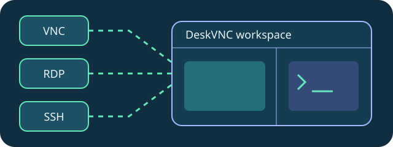
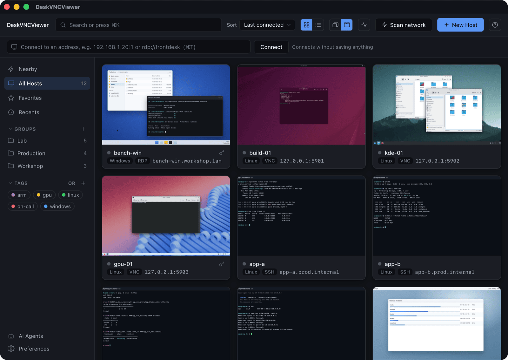

workflow
What changes when every machine shares one window?
A practical tour of the VNC, RDP and SSH workspace.
DeskVNC resources by deepaash
Native remote desktop and terminal connections for Windows, macOS and Linux. Meet VNC, RDP and SSH in a shared host library, with an optional agent control plane.
Explore the workflows

workflow
A practical tour of the VNC, RDP and SSH workspace.
engineering
Open, acquire, observe and act through the dvv control plane.
support
How Boundary makes attended support a consent-first workflow.
trust
Control leases make human supervision part of the interface.
comparison
A positive comparison of workflows built around VNC, RDP and SSH.
workflow-checklist
Open, acquire, observe and carry the generation before every input.